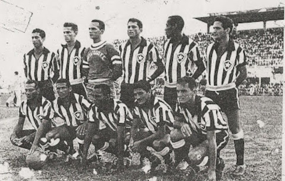

12 de agosto de 1904

O Botafogo de Futebol e Regatas foi fundado em 1º de julho de 1894, na cidade do Rio de Janeiro, Brasil.
O clube foi criado por um grupo de remadores que buscavam estabelecer uma agremiação esportiva que envolvesse diversas modalidades, incluindo o remo e o futebol.
Assim, o Botafogo foi inicialmente fundado como um clube de remo, mas rapidamente expandiu suas atividades para o futebol e outras modalidades esportivas ao longo dos anos.
O nome "Botafogo" foi escolhido em homenagem ao bairro homônimo no Rio de Janeiro.
O clube tornou-se conhecido por sua tradição esportiva e sua participação destacada no cenário esportivo brasileiro.
MAIORES ÍDOLOS DO BOTAFOGO
Nílton Santos: Considerado um dos maiores laterais-esquerdos da história do futebol, Nílton Santos passou toda a sua carreira no Botafogo, contribuindo para a conquista de títulos importantes, incluindo duas Copas do Mundo com a seleção brasileira.
Garrincha: Outra lenda do futebol mundial, Garrincha jogou a maior parte de sua carreira no Botafogo. Famoso por suas habilidades dribladoras excepcionais, ele foi peça fundamental na conquista da Copa do Mundo de 1958 e 1962 com a seleção brasileira.
Jairzinho: O "Furacão da Copa" foi um atacante notável do Botafogo e da seleção brasileira. Jairzinho fez parte da equipe campeã mundial na Copa do Mundo de 1970 e é lembrado por sua velocidade e habilidade de marcar gols decisivos.
Gérson: Meio-campista talentoso, Gérson teve uma passagem importante pelo Botafogo na década de 1960. Conhecido como "Canhotinha de Ouro", foi um jogador técnico e fundamental na conquista do Campeonato Carioca e da Taça Brasil.
Heleno de Freitas: Embora sua carreira tenha sido interrompida precocemente devido a problemas pessoais e de saúde, Heleno de Freitas é lembrado como um dos maiores craques da história do Botafogo. Sua habilidade como atacante o tornou uma figura lendária no clube.